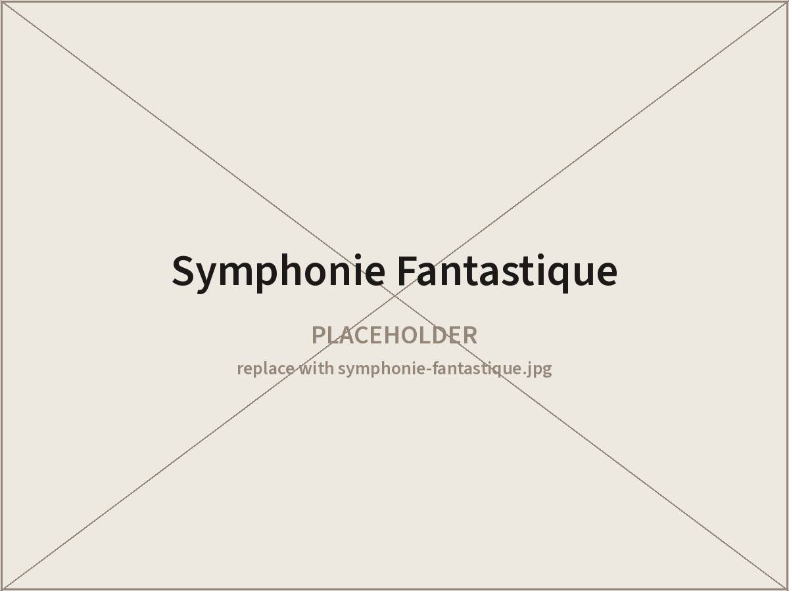
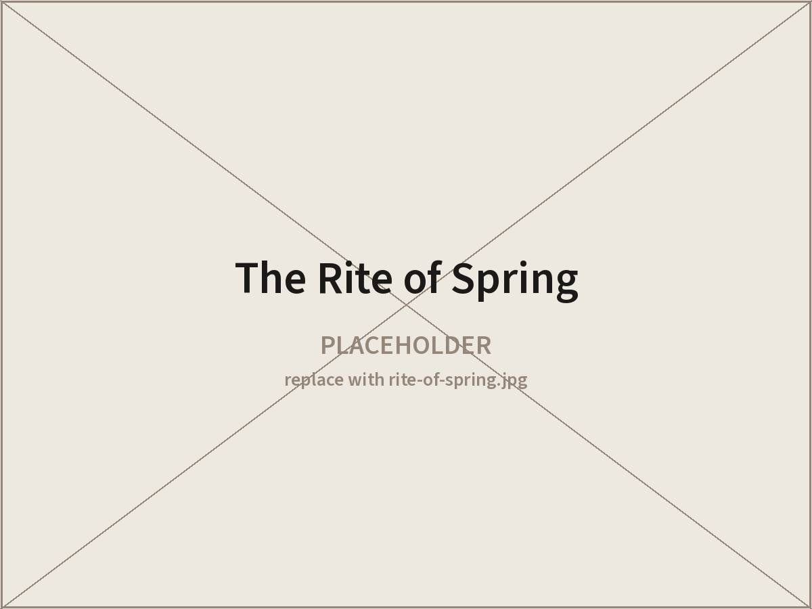
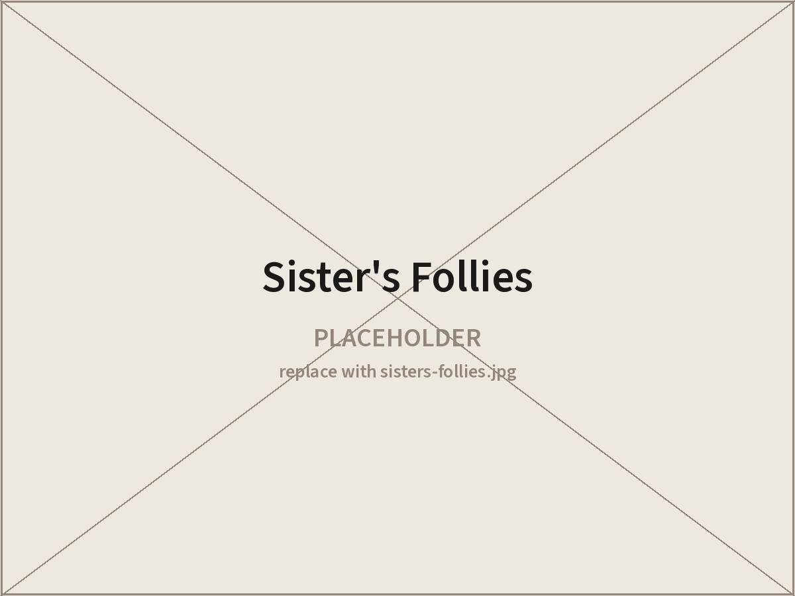
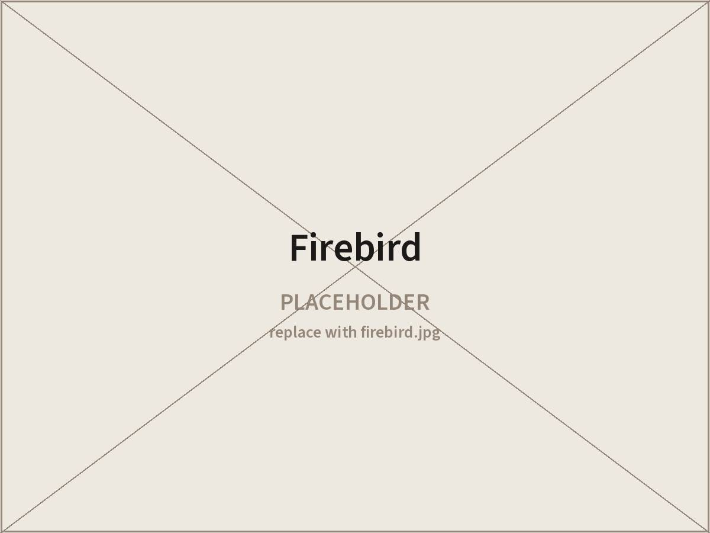
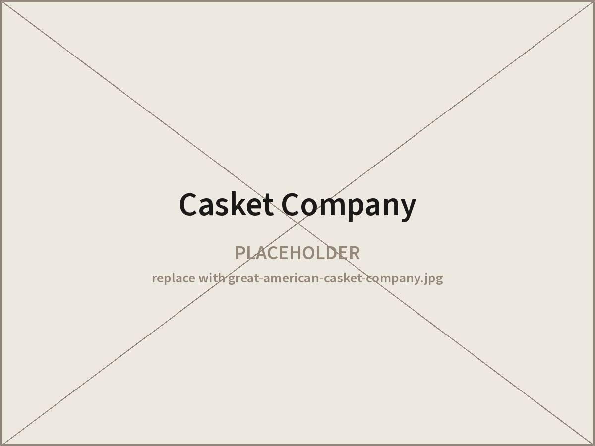
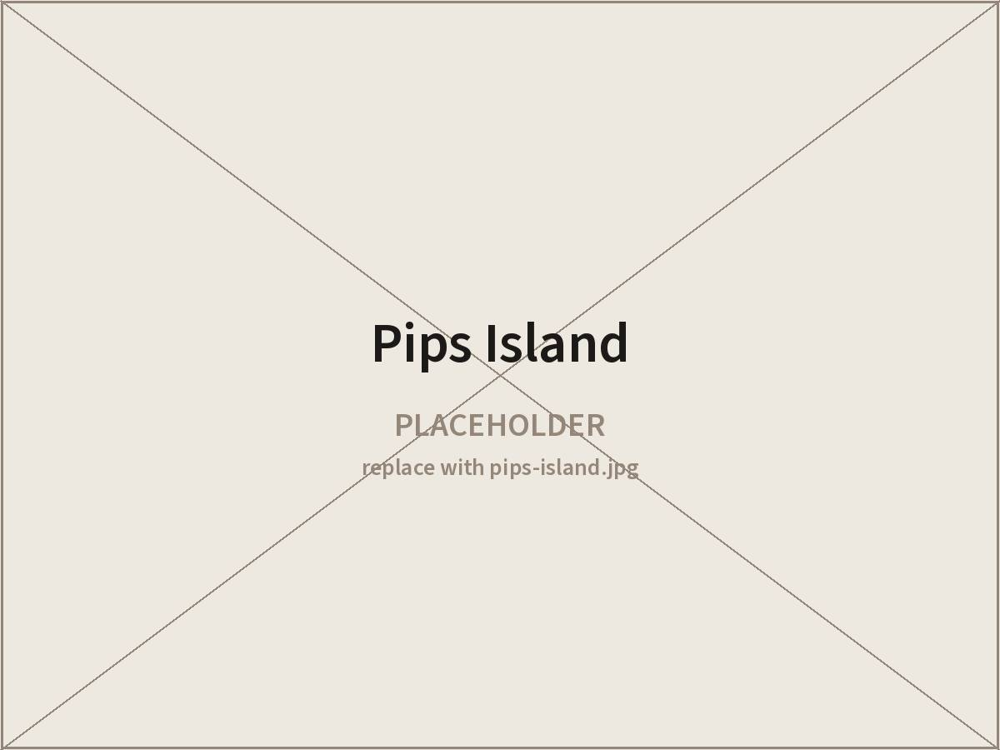
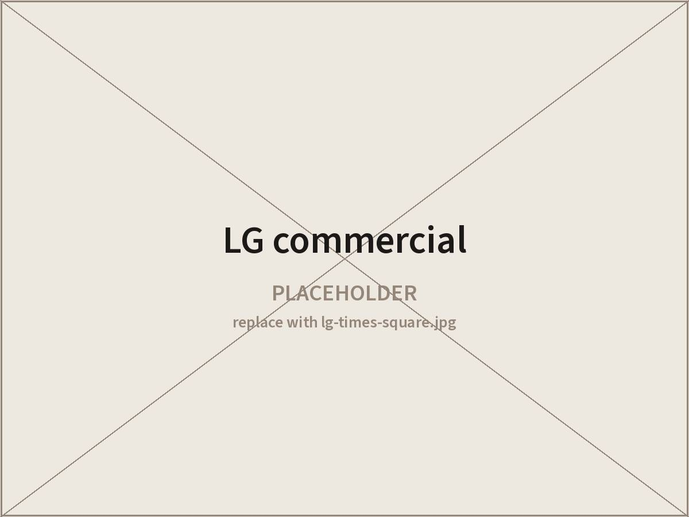
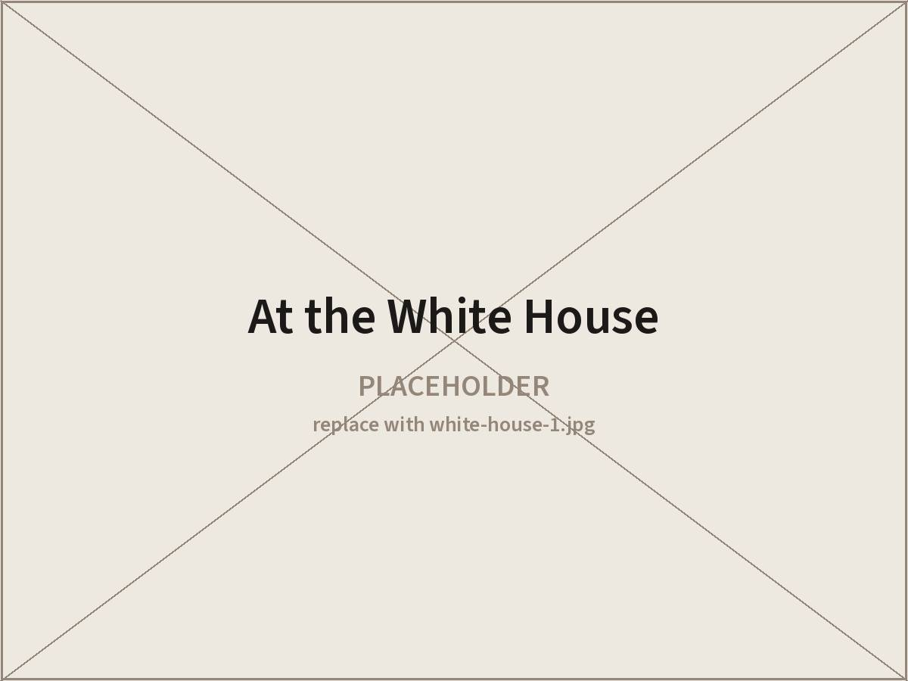
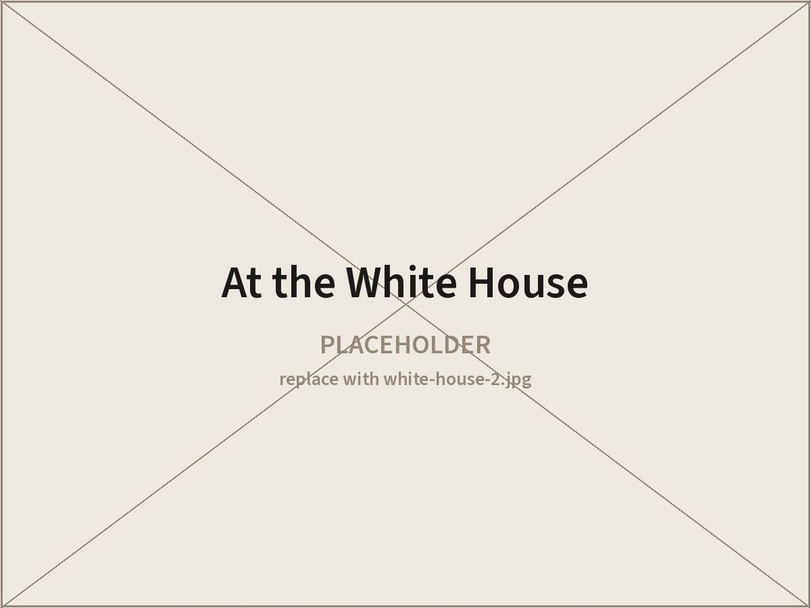

Work
Work
Performance photographs, grouped by production. Eleven images came off the Wix site’s portfolio and are listed below by their captions; the files themselves are the one thing this site cannot be finished without.
Basil Twist
Symphonie Fantastique, Sister’s Follies, The Rite of Spring
-

Symphonie Fantastique Directed by Basil Twist, 2018 -

The Rite of Spring Directed by Basil Twist, 2013 -

Sister’s Follies Directed by Basil Twist, 2015 · Abrons Arts Center
Chris Green
Firebird
-

Firebird Directed by Chris Green, 2013 and 2015
Other productions
Casket Company, Pips Island, commercial work
-

The Great American Casket Company Year and director to confirm -

Pips Island Interactive theatrical production, 2016–17 -

LG commercial Times Square -

At the White House Production and year to confirm -

At the White House Production and year to confirm